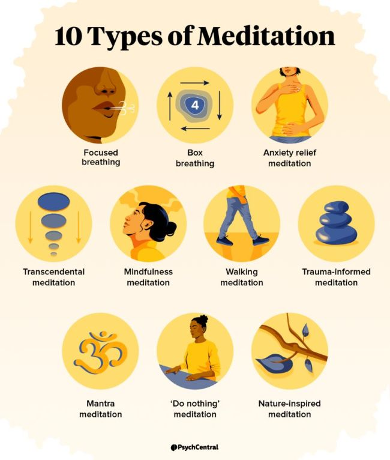
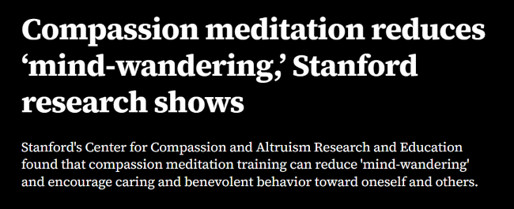

To start Meditation first:
- Finding a quite spot
- Sitting in a comfortable place
- focus on breathing through your stomach (inhale and exhale)
- Notice your thoughts, and just observe them. Instead just focus on breathing
- Trying this for 5 minutes a day
*
This is a process and will take time for you to see the effect.

Source:
https://psychcentral.com/health/types-of-meditation
Research Finding
In 2015 standford conducted a reseach based on meditation with compassion. Results shows:
Decrese mind-wondering.
Increased focus
More compassion towards others

Source:
https://news.stanford.edu/stories/2015/04/mindful-meditation-benefits-042215